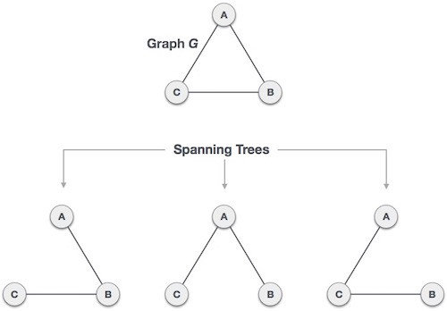
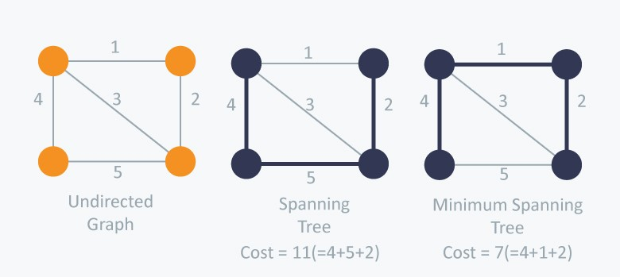
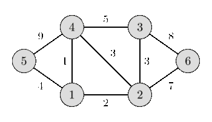
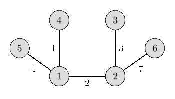

Given an connected undirected graph. Our aim is to find a subtree of the given graph which is a tree and connects all the vertices having the weight of the edges lowest possible (i.e. sum of weights of all the edges of the tree should be minimum possible).
Spanning Tree :-
• A subgraph of the given connected undirected graph which connects all the vertices.
• It doesn’t contain cycles or self-loops.
• There can many spanning trees of a graph.
• A spanning tree always has N-1 edges. (N is the number of nodes of the given graph)
• Removing one edge from the spanning tree will make the graph disconnected, and similarly adding an edge to the spanning tree will create a cycle or loop in the graph.

All the possible spanning trees of the above graph is shown in the figure above.
• A minimum spanning tree (MST) of the graph is a specific type of spanning tree having sum of weights of the edges minimum possible.

Two of the spanning trees of the undirected graph are shown above of which only second one is minimum spanning tree (MST).
• If the weight of all the edges are distinct, then there exist a unique MST of the graph.
• MST of a graph is a tree with minimum possible product of edges.
• If we have to construct maximum spanning tree, then we just have to apply the same algorithm by reversing the sign of weight of all the edges.
We can solve this problem with different methods :-
• Normal Kruskal’s Algorithm
• Kruskal’s algorithm using Disjoint Subset union (DSU)
• Initially we consider all the nodes as isolated and they do not have any link with each other.
• Now in order to make a MST we have to select those edges having less weight, therefore we sort all the edges according to their weight in increasing order.
• Now we start iterating on every edge and we check whether both the nodes are already joined or not. If we find that the nodes are already joined then we move to the next edge because if we add this edge to our MST, there there will be formation of a cycle.
• Checking whether the nodes are already joined or not is done in O(1).
• And, if we find that the nodes are not joined then we join them ( by join function in the code) and move on to the next edge. We also add this edge and it’s corresponding weight to our MST.
• Concept of joining two nodes :-
➢ Initially we assign every node a node_id which is equal to the node itself, as we were assuming every node to be isolated initially.
➢ If we have to join two nodes i.e. joining two subtree (first subtree containing the first node and second subtree containing the second node). For this we iterate over all the nodes and change the all the nodes having node_id same as the node_id of first node to the node_id of the second node.
➢ Joining of two nodes take place in O(N).
➢ In this way when two different subtrees have the same node_id, this implies that there is an edge between the two subtrees, and hence it became a single subtree.
➢ For checking whether two nodes are joined or not we check whether their respective node_id are similar or not. Similar node_id indicates that the nodes are joined and vice-versa.
Implementation :-
Input :-

6 9
5 4 9
1 5 4
1 4 1
1 2 2
4 3 5
2 4 3
2 3 3
6 3 8
2 6 7
Output :-

1 4 1
1 2 2
2 3 3
1 5 4
2 6 7
• In this algorithm we will we using DSU, so it is assumed that you guys have already learnt about DSU.
• The concept of this algorithm is same as the previous one, just a difference that here we use DSU to check whether two nodes are joined or not using find function which works in time complexity O(1).
• Here we use DSU to join two nodes as in DSU joining two nodes is having less time complexity O(1).
Implementation :-
Input :-
6 9
5 4 9
1 5 4
1 4 1
1 2 2
4 3 5
2 4 3
2 3 3
6 3 8
2 6 7
Output :-
1 4 1
1 2 2
2 3 3
1 5 4
2 6 7
It is highly recommended to solve below problems, they are handpicked by Programmers Army:
Practice Problems :-
• Edges in MST
• Flea
• Hierarchy
This article is contributed by Shaan Kumar
So that’s it for this article we will be coming up with our next article on further topics of Graph Theory very soon till then keep learning, keep coding, keep reading and keep improving !!
Happy Coding
By Programmers Army 😊